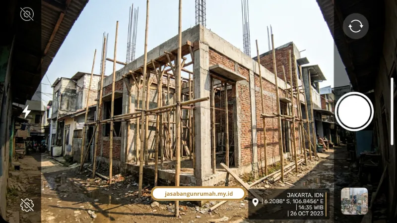

Daftar Isi
Kontraktor bergaransi Jakarta yang kredibel wajib punya legalitas NIB dan SBU aktif, SPK dengan klausul jelas, serta sistem pengawasan proyek yang terdokumentasi setiap hari. Ketiga hal itu jauh lebih penting daripada sekadar janji lisan di awal pertemuan.
Ketakutan terbesar pemilik rumah bukan soal desain, melainkan proyek macet, biaya membengkak, atau kontraktor yang menghilang setelah uang ditransfer. Inilah alasan mengapa Anda perlu memahami dokumen legalitas, isi SPK, dan sistem supervisi project management secara lebih bijak sebelum menandatangani kontrak.
Apa Saja Dokumen Legalitas yang Wajib Dimiliki Kontraktor Rumah?
Dokumen legalitas yang wajib dimiliki kontraktor profesional meliputi NIB aktif, SBU, IUJK, NPWP perusahaan, dan sertifikat kompetensi tenaga ahli seperti SKK, SKA, atau SKT.
- NIB (Nomor Induk Berusaha): aktif di bidang konstruksi, bisa dicek via portal OSS.
- SBU (Sertifikat Badan Usaha): diverifikasi pada sistem LPJK Kementerian PUPR.
- IUJK: bukti badan usaha resmi berbentuk PT atau CV.
- Sertifikat Kompetensi Kerja: untuk tenaga ahli dan supervisi lapangan.
Kontraktor terpercaya biasanya tercatat di asosiasi badan usaha terakreditasi LPJK seperti GAPENSI, GAPENRI, GABPEKNAS, AKI, INKINDO, ASPEKINDO, GAPEKSINDO, atau ASPEKNAS. Untuk pembangunan di DKI Jakarta, ada syarat tambahan seperti KRK/IRK serta kebutuhan IPTB untuk disiplin arsitektur, struktur, listrik, sanitasi, sampai transportasi dalam gedung.
Bila kontraktor tidak menunjukkan dokumen-dokumen ini, risiko yang ditanggung bukan hanya soal anggaran, tetapi juga potensi sanksi administratif atau bahkan tuntutan hukum di kemudian hari.
Seberapa Kuat Kekuatan Hukum SPK Dibanding Kontrak Formal?
SPK sama-sama mengikat secara hukum dengan kontrak formal, tapi biasanya dipakai untuk proyek bernilai rendah-menengah. Sementara proyek besar biasanya memerlukan surat perjanjian formal yang lebih lengkap klausulnya.
SPK diatur dalam Perpres No. 16 Tahun 2018 jo. Perpres No. 46 Tahun 2025 dan tunduk pada KUHPerdata, terutama asas pacta sunt servanda. Artinya, perjanjian berlaku sebagai undang-undang bagi pihak yang membuatnya.
- Kesepakatan para pihak
- Kecakapan bertindak
- Objek pekerjaan yang jelas
- Kausa yang halal
Untuk proyek beranggaran besar dan risiko tinggi, perjanjian formal lebih aman karena mencakup klausul force majeure, denda keterlambatan, dan perlindungan hak pihak ketiga. Jika terjadi wanprestasi, pihak yang lalai wajib menanggung ganti rugi, biaya, dan bunga sesuai Pasal 1243 KUHPerdata.

Bagaimana Sistem Pengawasan Proyek Kami Bekerja Setiap Hari?
Sistem pengawasan proyek kami berjalan melalui laporan harian, mingguan, dan bulanan yang mengikuti standar SOP Kementerian PUPR. Dokumen ini dilengkapi foto bertimestamp, geotagging, serta catatan progress fisik yang terdokumentasi dengan rapi.
Laporan harian biasanya mencatat:
- Jenis dan kuantitas bahan
- Alokasi tenaga kerja
- Penggunaan peralatan
- Volume pengerjaan
- Kondisi cuaca dan K3
Sistem ini membantu klien mengontrol progres, memastikan progress fisik sesuai jadwal, dan memudahkan penilaian termin pembayaran. Kami juga menerapkan mekanisme pembayaran berdasarkan progres yang diverifikasi bersama, dengan DP tidak melebihi 30 persen dari total nilai proyek.
Apa Itu Masa Retensi Garansi dan Kenapa Penting?
Masa retensi garansi adalah penahanan sisa pembayaran sebesar 5 persen selama 3 sampai 6 bulan setelah serah terima kunci. Tujuannya adalah memastikan kontraktor tetap bertanggung jawab atas cacat kecil yang baru terlihat setelah rumah mulai dihuni.
Cacat yang biasanya masuk cakupan retensi seperti kebocoran ringan, retak rambut, atau masalah finishing yang baru muncul setelah beberapa bulan. Ini menjadikan masa retensi sebagai mekanisme perlindungan penting bagi pemilik rumah.
Checklist Singkat Sebelum Tanda Tangan Kontrak Kerja
Sebelum menandatangani SPK atau kontrak kerja, pastikan beberapa poin berikut ada di dalam dokumen:
- Rincian spesifikasi material dan RAB tertulis jelas
- Skema pembayaran termin yang jelas
- Klausul garansi struktur dan masa retensi
- Denda keterlambatan bila proyek meleset jadwal
- Prosedur penyelesaian sengketa dari musyawarah sampai jalur hukum
Legalitas yang lengkap, SPK yang seimbang, dan pengawasan yang terdokumentasi adalah fondasi utama yang membuat kontraktor pantas disebut bergaransi. Kami menerapkan prinsip itu sebagai standar kerja, bukan sekadar menonjolkan slogan di brosur.